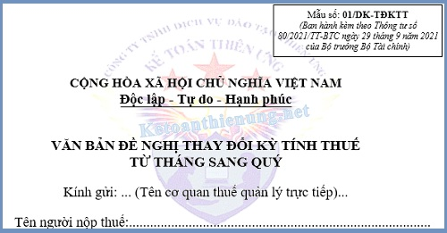

Mẫu 01/DK-TĐKTT Văn bản đề nghị thay đổi kỳ tính thuế từ tháng sang quý; Mẫu 01/DK-TĐKTT theo Thông tư 80/2021/TT-BTC sử dụng khi DN muốn thay đổi kỳ tính thuế từ tháng sang quý.
Khi nào phải nộp Mẫu 01/DK-TĐKTT Văn bản đề nghị thay đổi kỳ tính thuế từ tháng sang quý cho Cơ quan thuế:
Căn cứ theo khoản 2 Điều 9 Nghị định 126/2020/NĐ-CP quy định:
2. Người nộp thuế có trách nhiệm tự xác định thuộc đối tượng khai thuế theo quý để thực hiện khai thuế theo quy định.
a) Người nộp thuế đáp ứng tiêu chí khai thuế theo quý được lựa chọn khai thuế theo tháng hoặc quý ổn định trọn năm dương lịch.
b) Trường hợp người nộp thuế đang thực hiện khai thuế theo tháng nếu đủ điều kiện khai thuế theo quý và lựa chọn chuyển sang khai thuế theo quý thì gửi văn bản đề nghị quy định tại Phụ lục I ban hành kèm theo Nghị định này đề nghị thay đổi kỳ tính thuế đến cơ quan thuế quản lý trực tiếp chậm nhất là 31 tháng 01 của năm bắt đầu khai thuế theo quý, Nếu sau thời hạn này người nộp thuế không gửi văn bản đến cơ quan thuế thì người nộp thuế tiếp tục thực hiện khai thuế theo tháng ổn định trọn năm dương lịch.
Như vậy: Trường hợp DN đang thực hiện khai thuế theo tháng nếu đủ điều kiện khai thuế theo quý và lựa chọn chuyển sang khai thuế theo quý thì gửi Văn bản đề nghị thay đổi kỳ tính thuế từ tháng sang quý Mẫu 01/DK-TĐKTT cho Cơ quan thuế
- Thời hạn nộp Mẫu 01/DK-TĐKTT Văn bản đề nghị thay đổi kỳ tính thuế từ tháng sang quý chậm nhất là 31 tháng 01 của năm bắt đầu khai thuế theo quý.
----------------------------------------------------------------
Văn bản đề nghị thay đổi kỳ tính thuế từ tháng sang quý
|
Mẫu số: 01/DK-TĐKTT (Ban hành kèm theo Thông tư số 80/2021/TT-BTC ngày 29 tháng 9 năm 2021 của Bộ trưởng Bộ Tài chính) |
CỘNG HÒA XÃ HỘI CHỦ NGHĨA VIỆT NAM
Độc lập - Tự do - Hạnh phúc
--------------o0o------------
--------------o0o------------
VĂN BẢN ĐỀ NGHỊ THAY ĐỔI KỲ TÍNH THUẾ TỪ THÁNG SANG QUÝ
Kính gửi: ... (Tên cơ quan thuế quản lý trực tiếp)...
Tên người nộp thuế:...Công ty Kế toán Diệu Tâm ......Kính gửi: ... (Tên cơ quan thuế quản lý trực tiếp)...
Mã số thuế:......0112456835 ................
Địa chỉ:..Nhà Số 35 Trần Điền, phường Định Công, Hà Nội .....
Nghề nghiệp/Lĩnh vực hoạt động/Ngành nghề kinh doanh chính:.. Dạy học kế toán thực hành thực tế ....
Hiện nay, cơ sở chúng tôi đang thực hiện khai thuế ...<chọn một trong hai loại thuế: Giá trị gia tăng, Thu nhập cá nhân>... theo kỳ tính thuế Tháng, đủ điều kiện khai thuế theo kỳ tính thuế Quý và lựa chọn khai thuế theo kỳ tính thuế Quý.
Cơ sở chúng tôi đề nghị được áp dụng kỳ tính thuế ...<chọn một trong hai loại thuế: Giá trị gia tăng, Thu nhập cá nhân>... theo Quý kể từ kỳ tính thuế Quý I năm 2025.
Cơ sở chúng tôi xin cam kết thực hiện tính thuế, khai thuế và nộp thuế theo đúng quy định của Luật Quản lý thuế, các văn bản quy phạm pháp luật thuế có liên quan (bao gồm cả các văn bản quy phạm pháp luật sửa đổi, bổ sung cũng như quy định chi tiết) hiện hành.
Nếu vi phạm luật thuế và các chế độ quy định, chúng tôi xin chịu xử lý theo pháp luật./.
|
..., ngày 15 tháng 09 năm 2026 NGƯỜI NỘP THUẾ hoặc ĐẠI DIỆN HỢP PHÁP CỦA NGƯỜI NỘP THUẾ (Chữ ký, ghi rõ họ tên; chức vụ và đóng dấu (nếu có)/Ký điện tử) |
-----------------------------------------------------------------------
